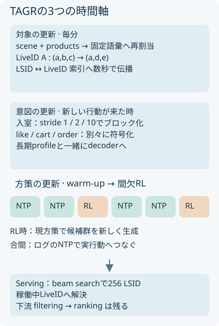
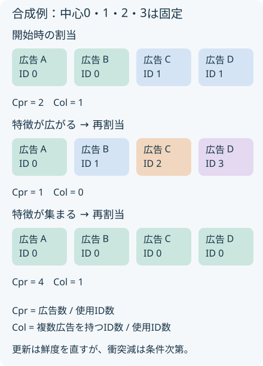

概要
TAGRは語彙を固定したままライブ広告のSID割当を更新し、行動履歴と選好学習も別の周期で更新する。10%トラフィック、4000万人超のA/Bで売上+16.1%を報告する。役割は下流ランキングへ渡す候補検索である。
問題設定
配信ルームIDが同じでも、紹介する商品や映像が変われば検索対象の意味は変わる。SIDを開始時のままにすると、新しい商品を求めるユーザーが古い意味のIDを生成する。ユーザー側でも入室と注文では行動の密度も意図も違う。
核心
著者の主張 · 論文に書かれていること
著者は、LSIDによる対象更新、IAGによる意図表現と教師重み、IOPOによる間欠的な現方策更新を組み合わせる。Kuaishouのライブ広告でLRE率+8.5%、SCC率+7.4%、広告売上+16.1%をDLRM比で報告する（§4）。
解釈・批評 · 読書メモ
更新周期は一つではない。対象、意図、方策を分けて考える。語彙固定でも割当が動けば履歴ラベルと索引の時間的一貫性は難しくなる。売上差をSID更新だけに帰属せず、表現学習、重みづけ、下流教師の組合せとして読む必要がある。
モデル / 手法
LSIDはユーザーごとのIDにしない
scene encoderは配信者の過去の販売スタイル、現在の映像、場面特徴を読む。product encoderは商品テキスト、属性、注文状態などを読む。user encoderは長期興味とprofileを扱う。三つともReLUつきMLPで共有空間へ写す（§2.2）。
L_align = L_U2S + L_U2P + L_S2P
入室でuser–scene、カートクリックでuser–product、共起でscene–productを対照学習する。割当には次の融合表現を使う。
z_live(t) = normalize(α s(t) + β p(t))
y_a(t) = RQ-KMeans(z_live(t)) = (s₁,…,s_D)
協調情報は表現学習に入るが、同じ時刻の広告はリクエストによらず共通のIDを持つ。最終階層には配信者を考慮したhash bucketを使う。現行広告は毎分再符号化し、正規の割当をstorageへ書き、数秒以内に双方向LSID–LiveID索引へ伝える（§3.2）。固定するのは語彙だ。広告への割当は動く。
入室履歴を複数の幅でまとめ、注文履歴は別に読む
IAGは軽量TransformerであるLazy Decoderを使う。MSIでは直近の入室列をstride 1,2,10で連続ブロックへまとめ、それぞれ射影と位置表現を加える。stride 10は10件ごとに1件を抜く説明ではなく、10件を連結して一つの表現を作る式である。like、cart、orderは別ストリームとして符号化し、入室の複数スケールと長期profileに連結する。
Pθ(y|M_u(t)) = Π_l Pθ(s_l | s_<l, M_u(t))
MF-NTPはどのログを強く学ぶかを決める。
w(x) = w_feedback(x) · w_user(x) · w_eCPM(x)
L_NTP = −[Σ_x w(x) Σ_l γ_l log Pθ(s_l|s_<l,M_u(t_x))] / [Σ_x w(x) Σ_l γ_l]
feedbackは閲覧後の深い行動、userは価値層、eCPMは分位で正規化した商業価値を表す。実装では重みを正規化・clipする。将来の行動は学習時の重みにだけ使い、リクエスト時の入力へ漏らさない（Eq. (5)）。
IOPOは候補の鮮度と更新頻度を分ける
warm-upではNTPとReward Modelを学ぶ。その後は現方策で候補群を生成し、短いGRPO更新をT stepごとに行う。間のstepではログに対するNTPを続ける。BA-GRPOは行動への一致を、VA-GRPOは商業価値を加える。候補群内の報酬を平均と標準偏差で正規化し、clipしたadvantageをlog方策確率へ掛ける。
r_va = r_post + β_va r_eCPM、A_va = clip((r_va − μ_va)/(σ_va+ε))
Reward Modelは下層のLSID embeddingを共有する。post-exposure LREは実ユーザーfeedback、eCPM教師は本番fine-ranking scoreである。報酬計算ではstop-gradientを使う。したがって商業価値の信号は既存ランカーにも依存する。
サービングはbeam searchで256個のLSIDを生成し、稼働中LiveIDへ解決して下流filtering/rankingへ渡す。静的SIDを扱うGLIDEやGryphonとの比較点は対象の変化であり、TGRと同様に置換範囲を明示して読む。
対象・意図・方策を、それぞれの周期で更新する
{kind=link}

なぜ効きそうか
解釈・推論
語彙を固定すればdecoderの出力空間を維持でき、割当だけを更新すれば現在の内容を索引へ反映できる。NTPを挟む選好更新は、報酬に偏る学習を実行動へ引き戻す可能性がある。ただし更新頻度を下げれば常に良くなるわけではなく、急な環境変化には追随が遅れる。
根拠
下流をそろえた候補検索の比較
原典Table 1は同じ下流filtering/rankingと同等のtraffic bucketを用いる。DLRMは複数チャネルの二塔型検索基準系であり、TAGRが最終ランカーまで置換した比較ではない。複数週のランダム化A/Bは10%トラフィック、4000万人超（§4.3）。
| 累積構成 | 売上のDLRM比 |
|---|---|
| OneRec v2 | +6.1% |
| LSID | +9.9% |
| +MSI | +11.2% |
| +MF-NTP | +13.5% |
| +BA-GRPO | +14.7% |
| +VA-GRPO（Full） | +16.1% |
FullのLRE率は+8.5%、SCC率は+7.4%。いずれも相対変化で、パーセントポイントではない。累積追加の順序に依存するため、個別要素の独立した因果効果には分解できない。DLRMのoffline HRは評価形式が違うため原典も掲載しない。
SIDの衝突と安定性は別の指標
Table 2ではStatic SIDがCpr=1.42、Col=0.42、Stability=100%、Full LSIDが1.01、0.02、90%。Stabilityはセッション中に第1階層が変わらない広告の割合であり、全SIDが不変という意味ではない。第3階層に配信者hashを入れる効果も含む。
原典の定義では、N個の広告、U個の使用SID、複数広告を持つSID数Mに対してCpr=N/U、Col=M/Uとなる。このときN≥U+MなのでCpr≥1+Colのはずだ。ところがDynamic SIDの報告値は1.36と0.39で、この関係を満たさない。集計母集団や平均方法の違いがあるかは本文から確認できない。Fullの1.01と0.02も丸め前の値が必要であり、数値の整合性は未解決とする。
Table 4のNTP lossはoff-policy 1.79、continuous on-policy 1.68、IOPO 1.53。Stability列はloss spikeの有無で定義され、SID安定性とは異なる。原典はlow/moderate/highと表示し、割合の実数は示さない。一次資料：§4、Tables 1–4。
実行可能な理解
uv run papers/tagr-live-sid/run.py
4広告を固定中心0,1,2,3へ最近傍で割り当てる。途中で特徴を広げる条件と、一点へ集める反例を走らせる。Cpr、Col、割当維持率、現在特徴との二乗誤差を計算する。別のスカラー例ではNTP目標を0、報酬目標を±1とし、毎stepの報酬更新と5stepごとの更新を比較する。
このLabは run.py 単体で実行できます。結果はコードと同じフォルダーに保存されます。
結果
生の results.json
{
"kind": "synthetic mechanism illustration",
"seed": "deterministic",
"spread": {
"features_after": [
0.05,
1.05,
2.05,
3.05
],
"static_ids": [
0,
0,
1,
1
],
"refreshed_ids": [
0,
1,
2,
3
],
"static": {
"cpr": 2.0,
"col": 1.0,
"assignment_stability": 1.0,
"semantic_mse": 1.6024999999999998
},
"refreshed": {
"cpr": 1.0,
"col": 0.0,
"assignment_stability": 0.25,
"semantic_mse": 0.0024999999999999922
}
},
"collapse_counterexample": {
"features_after": [
0.05,
0.05,
0.05,
0.05
],
"static_ids": [
0,
0,
1,
1
],
"refreshed_ids": [
0,
0,
0,
0
],
"static": {
"cpr": 2.0,
"col": 1.0,
"assignment_stability": 1.0,
"semantic_mse": 0.45249999999999996
},
"refreshed": {
"cpr": 4.0,
"col": 1.0,
"assignment_stability": 0.5,
"semantic_mse": 0.0025000000000000005
}
},
"schedules": {
"continuous": {
"reward_updates": 60,
"mean_supervised_loss_after_warmup": 0.20867400303472253,
"peak_supervised_loss": 0.36,
"loss_trace": [
0.0,
0.0,
0.0,
0.0,
0.0,
0.0,
0.0,
0.0,
0.0,
0.0,
0.0,
0.0,
0.0,
0.0,
0.0,
0.0,
0.0,
0.0,
0.0,
0.0,
0.36,
0.16646400000000003,
0.22037391359999997,
0.20230132875263995,
0.2080004432642704,
0.20616811348626118,
0.20675357703027314,
0.20656613838093027,
0.20662610950043758,
0.2066069177951711,
0.20661305904388108,
0.2066110938343636,
0.20661172270039238,
0.20661152146315906,
0.20661158585906306,
0.20661156525237268,
0.20661157184651338,
0.20661156973638847,
0.2066115704116284,
0.20661157019555162,
0.20661157026469623,
0.20661157024256993,
0.20661157024965027,
0.2066115702473846,
0.20661157024810953,
0.2066115702478777,
0.20661157024795185,
0.20661157024792806,
0.20661157024793564,
0.20661157024793322,
0.20661157024793408,
0.20661157024793378,
0.20661157024793392,
0.20661157024793392,
0.20661157024793392,
0.20661157024793392,
0.20661157024793392,
0.20661157024793392,
0.20661157024793392,
0.20661157024793392,
0.20661157024793392,
0.20661157024793392,
0.20661157024793392,
0.20661157024793392,
0.20661157024793392,
0.20661157024793392,
0.20661157024793392,
0.20661157024793392,
0.20661157024793392,
0.20661157024793392,
0.20661157024793392,
0.20661157024793392,
0.20661157024793392,
0.20661157024793392,
0.20661157024793392,
0.20661157024793392,
0.20661157024793392,
0.20661157024793392,
0.20661157024793392,
0.20661157024793392
]
},
"intermittent": {
"reward_updates": 12,
"mean_supervised_loss_after_warmup": 0.14244494846501626,
"peak_supervised_loss": 0.36,
"loss_trace": [
0.0,
0.0,
0.0,
0.0,
0.0,
0.0,
0.0,
0.0,
0.0,
0.0,
0.0,
0.0,
0.0,
0.0,
0.0,
0.0,
0.0,
0.0,
0.0,
0.0,
0.36,
0.2304,
0.147456,
0.09437184000000001,
0.060397977600000013,
0.27181291290624005,
0.1739602642599936,
0.1113345691263959,
0.07125412424089338,
0.04560263951417177,
0.2826673760987312,
0.18090712070318796,
0.11578055725004027,
0.07409955664002578,
0.0474237162496165,
0.2812325584905875,
0.17998883743397598,
0.11519285595774462,
0.07372342781295654,
0.047182993800292186,
0.2814204150035057,
0.18010906560224366,
0.11526980198543593,
0.07377267327067899,
0.04721451089323455,
0.28139578870293896,
0.18009330476988097,
0.11525971505272382,
0.07376621763374325,
0.04721037928559568,
0.28139901646004545,
0.1800953705344291,
0.11526103714203463,
0.07376706377090217,
0.04721092081337739,
0.2813985933904118,
0.18009509976986351,
0.11526086385271267,
0.0737669528657361,
0.047210849834071096,
0.2813986488429769,
0.1800951352595052,
0.11526088656608331,
0.07376696740229333,
0.047210859137467726,
0.28139864157469785,
0.18009513060780663,
0.11526088358899622,
0.07376696549695759,
0.04721085791805286,
0.28139864252736574,
0.18009513121751408,
0.115260883979209,
0.07376696574669377,
0.047210858077884006,
0.28139864240249757,
0.18009513113759842,
0.11526088392806298,
0.07376696571396031,
0.0472108580569346
]
}
},
"not_tested": [
"RQ-KMeans",
"collaborative alignment",
"GRPO reward",
"production latency",
"revenue"
]
}特徴を広げる条件では静的割当のCpr=2、Col=1に対し更新後は1、0になる。一点へ集める反例では更新後Cpr=4、Col=1となり、更新は衝突減少を保証しない。スカラー例の報酬更新は60回対12回である。更新回数が異なるため、lossが低くても同予算のIOPO優位を示したことにはならない。
ID更新の利点は、衝突数だけでは決まらない
{kind=link}

検証できたこと
Mechanism PARTIAL。固定語彙への再割当、衝突の定義、鮮度と安定性のトレードオフを合成例で確認した。更新を疎にすると教師あり目標への摂動が減る例も確認したが、報酬品質は測定していない。
検証していないこと
本番レイテンシー、売上、QPSはNOT TESTED。原典のL20 GPU当たり2500超QPS、検索100ms未満は著者報告。toyはCPU上の最近傍量子化で、学習済みRQ-KMeans、hash、ユーザー協調情報、GRPO、索引伝播の遅延を省略する。報告されたCpr/Colの整合性も未確認。
実装
scenario() が同じ変更後特徴で静的割当と更新割当を評価する。schedule() は20stepのwarm-up後に報酬摂動を追加し、全loss系列と更新回数を保存する。GRPOの実装と誤解しないよう、合成摂動モデルとして独立させた。
原論文・公式コード対応
| 原典の機構 | Labの対応 | 省略したもの |
|---|---|---|
| PDF・HTML の手法節 | method.md と出典つきSVG | 原図の複製ではなく説明用に再構成 |
| 部分機構の合成例 | run.py → results.json | 本番データ、ニューラルモデル、論文の性能再現 |
| 公式実装 | 原典内で実行可能な公式コードURLを確認できず | 公式実装との同等性は未検証 |